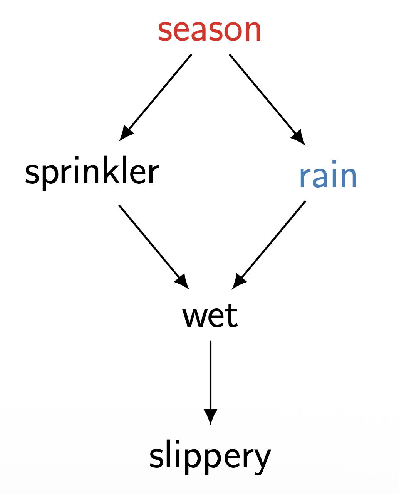
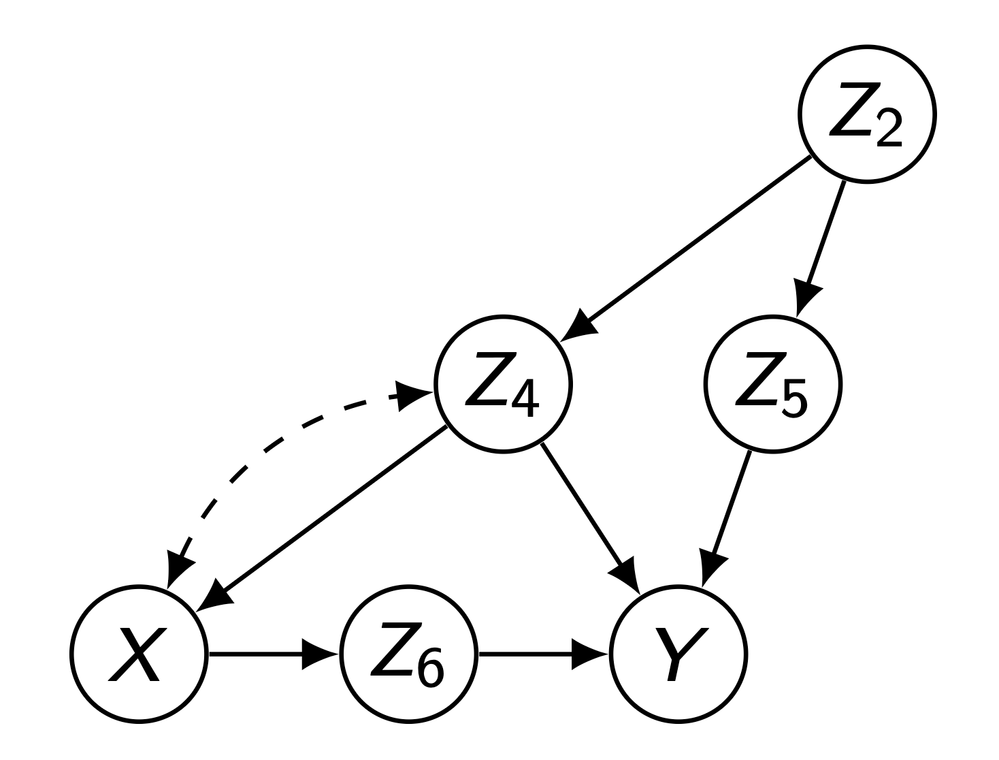
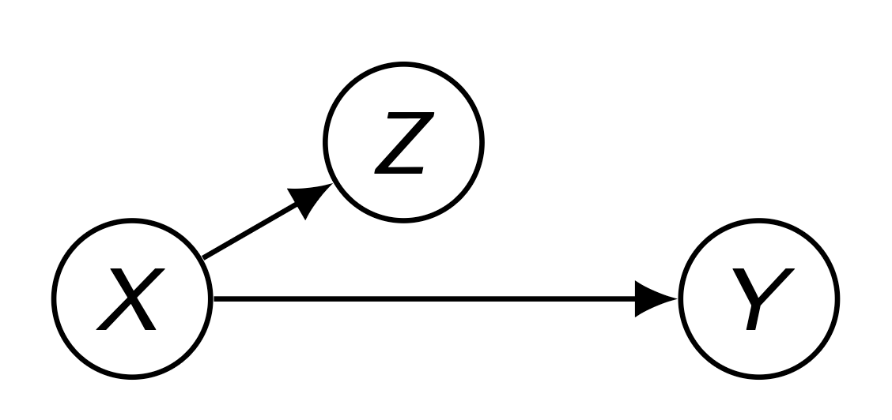

1 Overview
- 지난 포스트에서는 교란 편향(Confounding Bias)이 인과 효과 추정을 방해하는 주된 요인임을 살펴보았습니다.
- 그렇다면 우리는 복잡한 인과 그래프(DAG)에서 어떤 변수들의 집합(\(Z\))을 조절(Control/Adjustment)해야 이 편향을 제거할 수 있을까요?
- 이번 포스트에서는 그 해답이 되는 Back-door Criterion(백도어 기준)의 정의와 이를 이용한 보정 공식을 다룹니다.
2 Back-door Criterion
2.1 Definition
- 주어진 인과 그래프 \(G\)에서 변수 \(X\)와 \(Y\)에 대해, 변수들의 집합 \(Z\)가 다음 두 가지 조건을 만족할 때, \(Z\)는 Back-door Criterion을 만족한다고 정의합니다.
(i) No node in \(Z\) is a descendant of \(X\). (\(Z\)에 속한 어떤 변수도 \(X\)의 자손이 아니어야 합니다.)
(ii) \(Z\) blocks every path between \(X\) and \(Y\) that contains an arrow into \(X\). (\(Z\)는 \(X\)로 들어오는 화살표를 포함하는 \(X\)와 \(Y\) 사이의 모든 경로를 차단해야 합니다.)
2.2 의미 해석
- 조건 (i)은 \(X\)의 결과(Effect)로 나타나는 변수를 통제하지 말라는 뜻입니다. \(X\)의 자손을 통제하면 \(X\)가 \(Y\)에 미치는 실제 인과 경로를 막아버리거나 새로운 편향을 만들 수 있기 때문입니다.
- 조건 (ii)의 “arrow into \(X\)”는 소위 백도어 경로(Back-door Path)를 의미합니다. 이는 \(X\)의 원인이 되는 변수들에 의해 생성되는 비인과적 상관관계(Spurious Correlation)의 경로입니다. 이 경로를 차단함으로써 우리는 \(X\)에서 \(Y\)로 나가는 순수한 인과적 경로만 남길 수 있습니다.
3 Back-door Adjustment Theorem
- 만약 변수 집합 \(Z\)가 \(X, Y\)에 대해 Back-door Criterion을 만족한다면, \(X\)가 \(Y\)에 미치는 인과 효과는 식별 가능(Identifiable)하며 다음과 같이 계산할 수 있습니다.
\[P(y|do(x)) = \sum_{z} P(y|x,z)P(z)\]
- 이를 Back-door Adjustment Formula라고 합니다. 이 식은 우리가 \(do(x)\)라는 가상의 중재를 하지 않고도, 관측된 데이터(\(P(y|x,z), P(z)\))만으로 인과 효과를 계산할 수 있게 해줍니다.
4 Example 1: Sprinkler, Rain, and Wet
- 이 개념을 이해하기 위해 고전적인 예제인 “스프링클러와 비” 모델을 살펴봅시다.

- 목표: 스프링클러(\(X=\) Sprinkler)가 땅이 젖는 것(\(Y=\) Wet)에 미치는 인과 효과 구하기.
- Back-door Path: \(Sprinkler \leftarrow Season \rightarrow Rain \rightarrow Wet\)
- 이 경로는 스프링클러로 들어오는 화살표(\(Season \to Sprinkler\))로 시작하므로 백도어 경로입니다.
- 여기서 변수 집합 \(Z = \{Rain\}\)을 고려해 봅시다.
- 조건 (i): Rain은 Sprinkler의 자손이 아닙니다. (만족)
- 조건 (ii): Rain은 위 백도어 경로상에 존재하며, Chain 구조(\(\dots \to Rain \to \dots\))에 있으므로 Rain을 조건부로 잡으면(Adjusting) 이 경로는 차단됩니다. (만족)
- 따라서 우리는 Rain을 통해 보정할 수 있습니다.
\[P(Wet | do(Sprinkler)) = \sum_{Rain} P(Wet | Sprinkler, Rain) P(Rain)\]
- 이 과정은 \(Season\)이라는 공통 원인(Back-door Parent)을 직접 관측하지 못하더라도, 경로를 막을 수 있는 다른 변수(\(Rain\))를 이용해 보정이 가능함을 보여줍니다.
5 Example 2: Complex Graph & Strategies
- 조금 더 복잡한 그래프에서 적절한 백도어 집합(\(Z\))을 찾는 연습을 해봅시다.

5.1 분석 포인트
- 이 그래프에서 \(X\)와 \(Y\) 사이의 백도어 경로를 차단해야 합니다. \(X\)에서 나가는 화살표를 지운 그래프(\(G_{\underline{X}}\))를 상상했을 때 \(X\)와 \(Y\)가 d-separation 되는지 확인하는 것과 같습니다.
5.2 가능한 \(Z\) 집합의 예시
- \(Z = \{Z_4, Z_2\}\)
- \(Z = \{Z_4, Z_5\}\)
- \(Z = \{Z_4, Z_2, Z_5\}\)
5.3 주의할 점: Collider (\(Z_4\))
위 그래프에서 \(Z_4\)는 \(Z_1 \to Z_4 \leftarrow Z_2\) 구조를 갖는 Collider입니다.
만약 \(Z_4\)를 집합에 포함하지 않으면, \(Z_1 - Z_4 - Z_2\) 경로는 자연스럽게 막혀(Blocked) 있습니다.
하지만 \(Z_4\)를 집합에 포함시켜 조건부로 잡으면(Conditioning), 오히려 \(Z_1\)과 \(Z_2\) 사이의 경로가 열리게 됩니다
따라서 \(Z_4\)를 조정 변수로 사용할 때는, 이로 인해 열리는 다른 경로(\(Z_1 \dots Z_2\))를 막아줄 추가적인 변수(\(Z_2\) 등)를 함께 포함해야 합니다.
5.4 Case: \(Z = \emptyset\) (No Confounding)
- 만약 \(X\)로 들어오는 백도어 경로가 아예 없는 그래프라면 어떨까요?

- 이 경우 공집합 \(Z = \emptyset\)도 Back-door Criterion을 만족합니다.
- 즉, 별도의 조정 없이 관측된 조건부 확률이 곧 인과 효과가 됩니다.
\[P(y|x) = P(y|do(x))\]
- 이것이 바로 “교란이 없으면 상관관계는 인과관계이다(Correlation is Causation)”가 성립하는 유일한 순간입니다.
6 Derivation: Adjustment by Direct Parents \(\to\) Back-door Adjustment
6.1 Recap: Adjustment by Direct Parents
- 일반적으로 \(X\)의 모든 직접적인 부모(Direct Parents, \(Pa_X\))를 통제하면 Back-door Criterion을 항상 만족합니다.
\[P(y|do(x)) = \sum_{pa_X} P(y | x, pa_X) P(pa_X)\]
- 하지만 모든 부모 변수를 관측하는 것은 현실적으로 어려울 수 있습니다.
- 그렇다면, 부모가 아닌 Back-door Criterion을 만족하는 임의의 집합 \(Z\)를 통제해도 왜 동일한 결과가 나올까요?
- 아래 증명은 Direct Parents Adjustment 공식에서 시작하여 Back-door Adjustment 공식으로 유도되는 과정을 보여줍니다.
6.2 가정 (Assumptions)
- 집합 \(Z\)가 Back-door criterion을 만족한다고 가정합시다.
- Let \(Z^- = Z \setminus Pa_X\) (부모 변수를 제외한 나머지 \(Z\)의 요소들).
- Condition (i): \(Z\)의 어떤 노드도 \(X\)의 자손이 아님. \[\Rightarrow X \perp (Z \setminus Pa_X) \mid Pa_X\] \[\Rightarrow P(z^{-} | x, pa_{X}) = P(z^{-} | pa_{X})\]
- “미래는 과거를 바꿀 수 없다”는 원리입니다.
- 인과 그래프에서 부모(\(Pa_{X}\))와 \(Z\)는 \(X\)보다 먼저 일어난 일(또는 원인)이고, \(X\)는 그 결과입니다.
- 이미 부모(\(Pa_{X}\))의 상태를 다 알고 있다면, 결과인 \(X\)가 무엇이든 간에 그 원인이나 별개의 사건인 \(Z\)의 확률은 변하지 않습니다.
- Condition (ii): \(Z\)는 \(X\)로 들어오는 모든 뒷문 경로를 차단함. \[\Rightarrow Y \perp (Pa_X \setminus Z) \mid Z, X\] \[\Rightarrow P(y | x, pa_{X}, z^{-}) = P(y | x, z)\] (\(Z\)와 \(X\)가 주어졌을 때, \(Y\)는 \(Z\)에 포함되지 않은 나머지 부모들과 독립이다)
- “Z가 이미 충분한 정보를 담고 있다”는 원리입니다.
- 원래 \(Y\)를 예측하려면 교란 요인인 모든 부모들(\(Pa_{X}\))을 다 봐야 합니다. 하지만 \(Z\)가 ’백도어 기준’을 만족한다는 것은, \(Z\)가 부모들이 \(Y\)에 미치는 교란을 대신해서 다 막아주고 있다는 뜻입니다.
- 따라서 일단 \(Z\)를 알고 나면, 굳이 \(Z\)에 포함되지 않은 나머지 부모들(\(Pa_{X}\))을 추가로 더 안다고 해서 \(Y\)에 대한 예측이 달라지지 않습니다. \(Z\)가 그 역할을 완벽히 대체했기 때문입니다.
6.3 증명 (Derivation)
- 부모 변수를 통한 조정(Adjustment by Direct Parents) 공식에서 시작합니다.
\[ \begin{aligned} P(y|do(x)) &= \sum_{pa_X} P(y|x, pa_X)P(pa_X) \\ &= \sum_{z^-, pa_X} P(y|x, pa_X, z^-)P(z^-|x, pa_X)P(pa_X) && \because \text{Expand by } Z^- \text{ (Total Probability)} \\ &= \sum_{z^-, pa_X} P(y|x, z)P(z^-|pa_X)P(pa_X) && \because \text{Apply Assumptions Condition (i) \& (ii)} \\ &= \sum_{z^-, pa_X} P(y|x, z)P(z^-, pa_X) && \because \text{Chain Rule } P(A|B)P(B) = P(A,B) \\ &= \sum_{z} P(y|x, z) \sum_{pa_X \setminus z} P(z^-, pa_X) && \because \text{Rearrange Summation } (Z \cup (Pa_X \setminus Z) = \{Z, Pa_X\}) \\ &= \sum_{z} P(y|x, z)P(z) && \because \text{Marginalize out } Pa_X \setminus Z \end{aligned} \]
- 결론:
Adjustment by \(Z\) is equivalent to adjustment by direct parents whenever \(Z\) is back-door admissible.
- 즉, \(Z\)가 Back-door criterion만 만족한다면, 직접적인 부모를 모두 측정하지 못하더라도 \(Z\)를 통해 인과 효과를 정확히 계산할 수 있음이 수학적으로 증명됩니다.